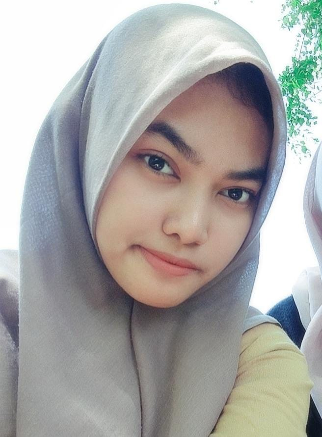
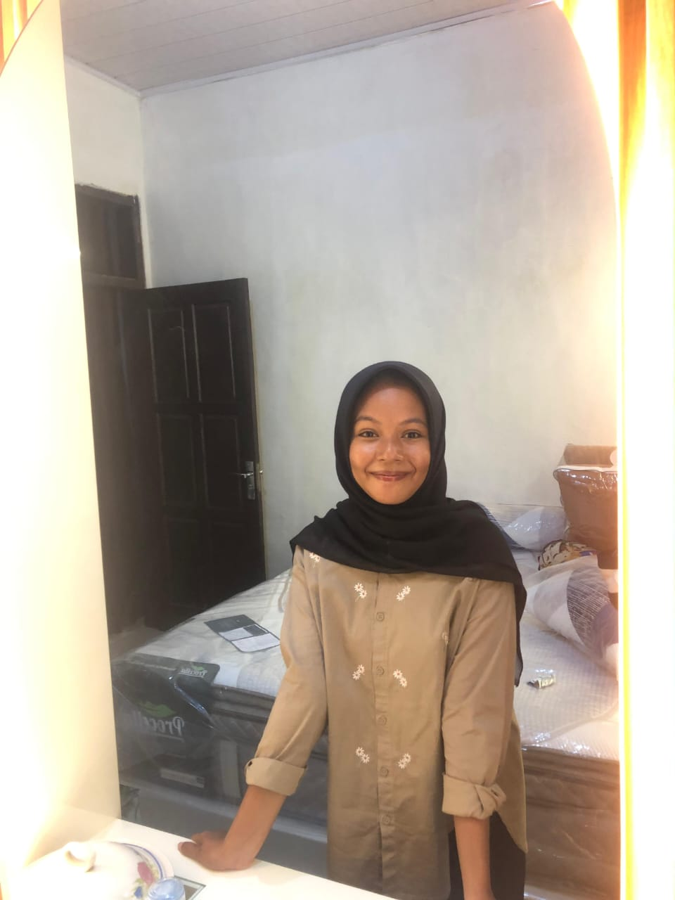
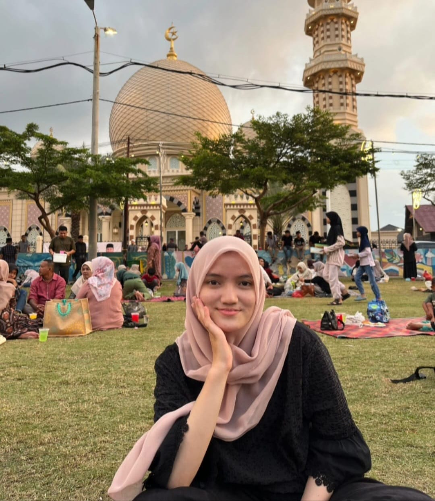
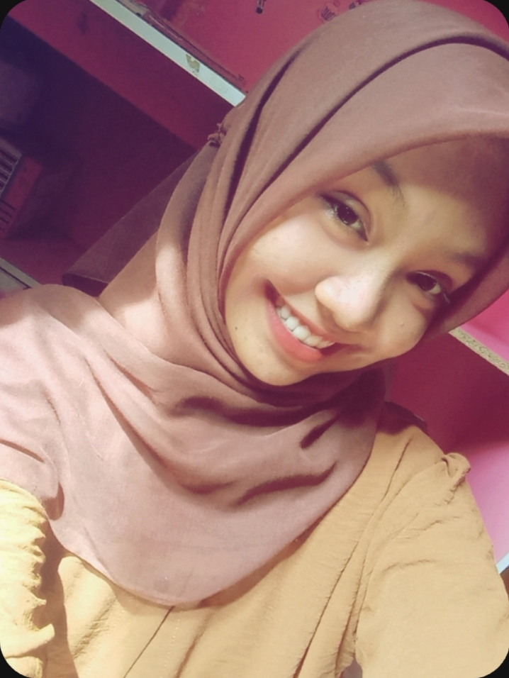
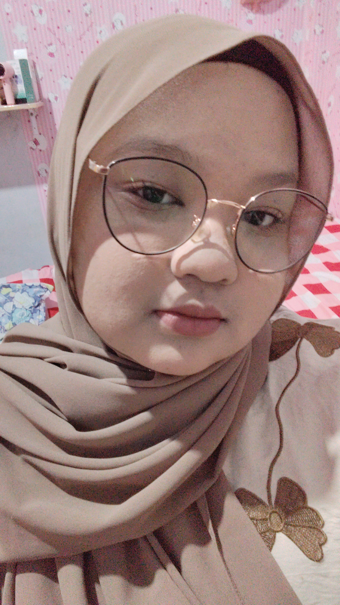

Mengenal Lebih Dekat SMA Pratama Elit Nusantara
SMA Pratama Elit Nusantara didirikan sebagai bentuk kepedulian terhadap pentingnya pendidikan berkualitas bagi generasi muda di Aceh dan sekitarnya. Sekolah ini hadir dengan semangat untuk menciptakan lingkungan belajar yang modern, nyaman, dan mampu membentuk siswa menjadi pribadi unggul, berkarakter, serta siap menghadapi perkembangan zaman.
Pada awal berdirinya, sekolah hanya memiliki beberapa ruang kelas sederhana dengan jumlah siswa yang masih terbatas. Namun, berkat dukungan masyarakat, tenaga pendidik profesional, dan semangat belajar para siswa, SMA Pratama Elit Nusantara berkembang pesat menjadi salah satu sekolah favorit yang dipercaya oleh masyarakat.
Seiring berjalannya waktu, sekolah terus melakukan berbagai inovasi dalam bidang pendidikan. Fasilitas pembelajaran modern seperti laboratorium, perpustakaan digital, ruang multimedia, serta area belajar yang nyaman mulai dikembangkan untuk mendukung proses belajar yang lebih efektif dan menyenangkan.
Tidak hanya fokus pada prestasi akademik, SMA Pratama Elit Nusantara juga menanamkan nilai disiplin, tanggung jawab, kepedulian sosial, dan akhlak mulia kepada seluruh siswa. Berbagai kegiatan organisasi, ekstrakurikuler, dan program pengembangan diri terus dilakukan untuk membantu siswa menemukan bakat dan potensi terbaik mereka.
Hingga saat ini, SMA Pratama Elit Nusantara terus berkomitmen menjadi sekolah unggulan yang mampu mencetak generasi cerdas, kreatif, inovatif, dan berdaya saing tinggi. Dengan semangat perubahan dan kemajuan, sekolah siap mengantarkan siswa menuju masa depan yang gemilang dan penuh prestasi.
Menjadi sekolah unggul yang menghasilkan generasi cerdas, berkarakter, kreatif, dan berdaya saing tinggi di tingkat nasional maupun internasional.




